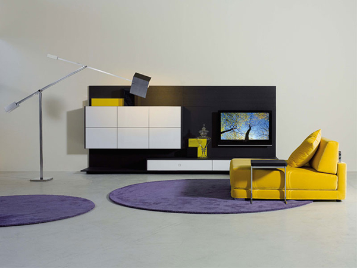
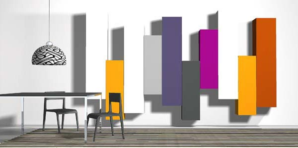

Modern Modular Furniture System from Tisettanta - Thesis
Thesis - the new modern modular furniture system from Tisettanta - has raised a few eyebrows and piqued much interest for its high-end look with a cool, customizable charm. The Thesis modular living room furniture collection can be composed in countless ways for a look that’s as unique as you are. Available in an endless array of colors or in rich natural woods like teak and oak, or even with the delicacy of transparent glass; to learn more about this furniture system, visit Tisettanta.
The Project
The project is born with the idea to combine some of the modular forniture system proposed by Tisettanta; in particular, I've decided to represent an interesting combination of items to create a nice looking living room, trying to use some of the most representative techniques learned during the course.
The final model is a combination of two proposed living rooms; in particular, I've decided to represent the model in the picture (a), using the closet disposition provided in the picture (b).
(a)
(b)
The Model
The next picture is a syntetic thumbnail of the modeled living room; the screenshot has been captured in the Plasm.js environment page . Feel free to check the code for the full model, or to check individually the most interesting components that make this forniture system really nice looking through the navigation bar. IMPORTANT: Each thumbnail leads to the plasm.js code of the model represented!All images are taken from Trendir.com.